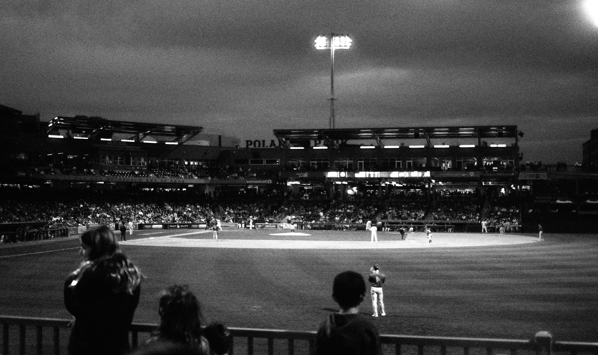
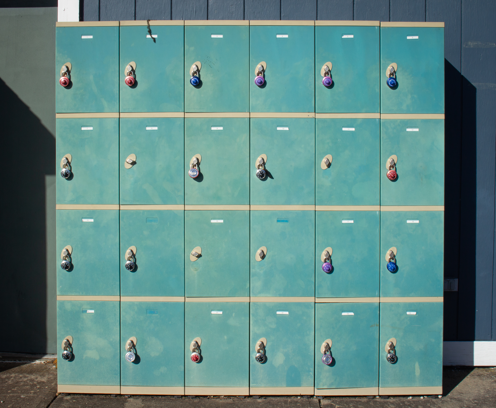
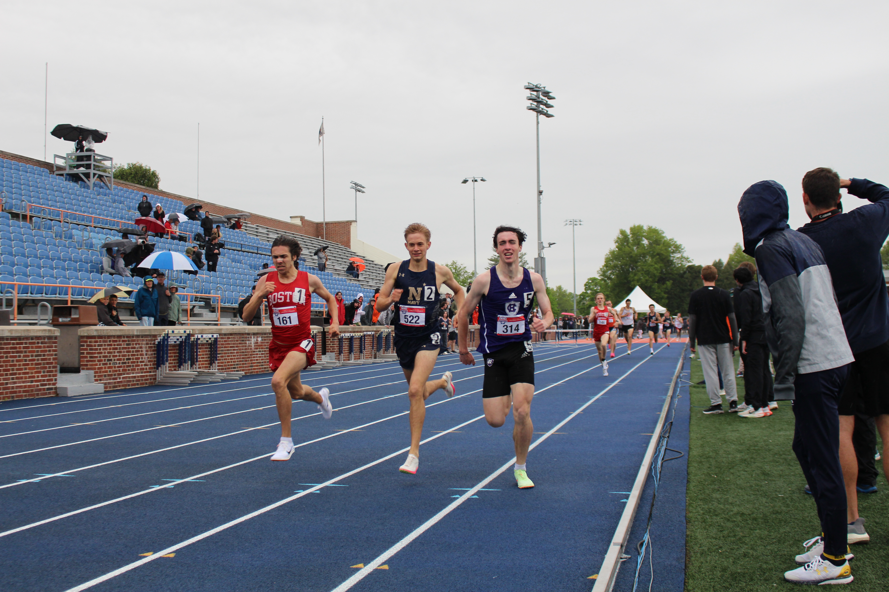
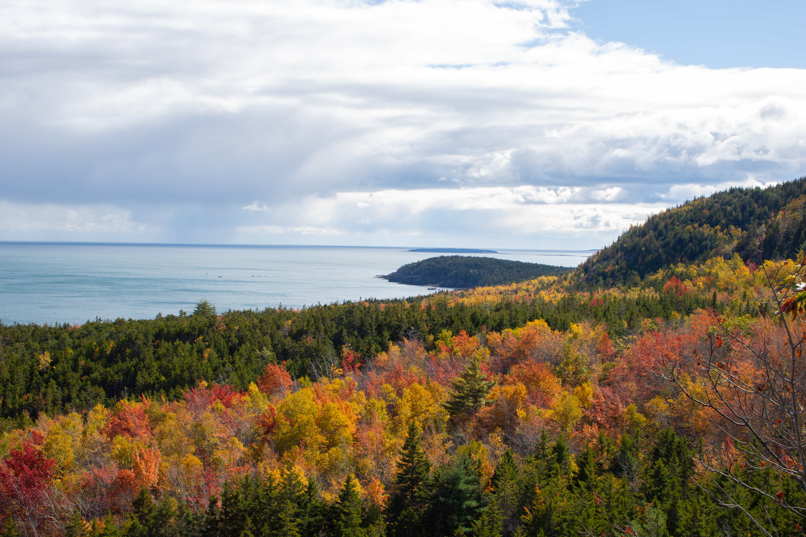
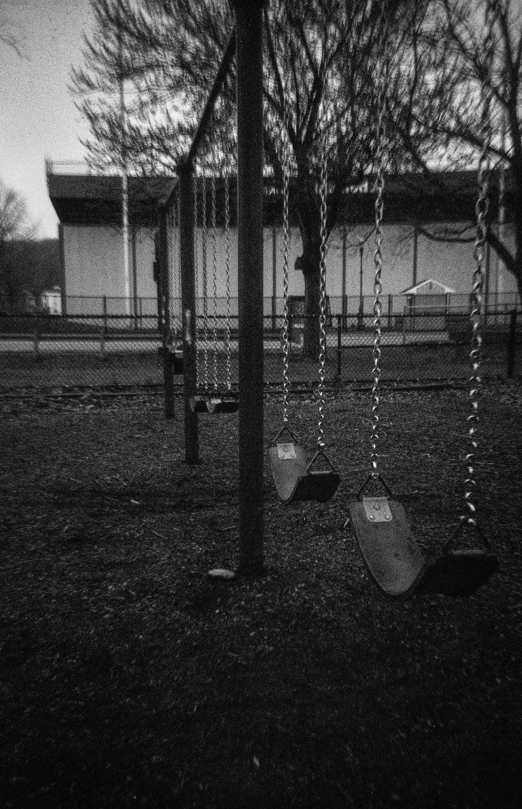
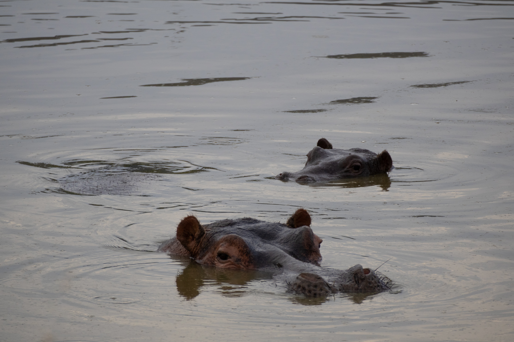

Through my lens, I capture more than images—I tell stories. From the energy of sports to the intimacy of portraits and the authenticity of everyday moments, my photography highlights connection, emotion, and detail.


As both an athlete and a photographer, I know the power of capturing a moment in motion. I specialize in sports, events, and portraits that showcase intensity, emotion, and community.


Hi, I’m Lauren! I use photography to freeze the moments that matter most—big or small, fast-paced or quiet. Whether on the sidelines, traveling, or behind the scenes, I aim to create images that feel real, vibrant, and lasting.

Photography is my way of noticing the details—the light, the movement, the in-between moments that tell the bigger story. My work blends digital and film photography to create images that are authentic, timeless, and full of life.
